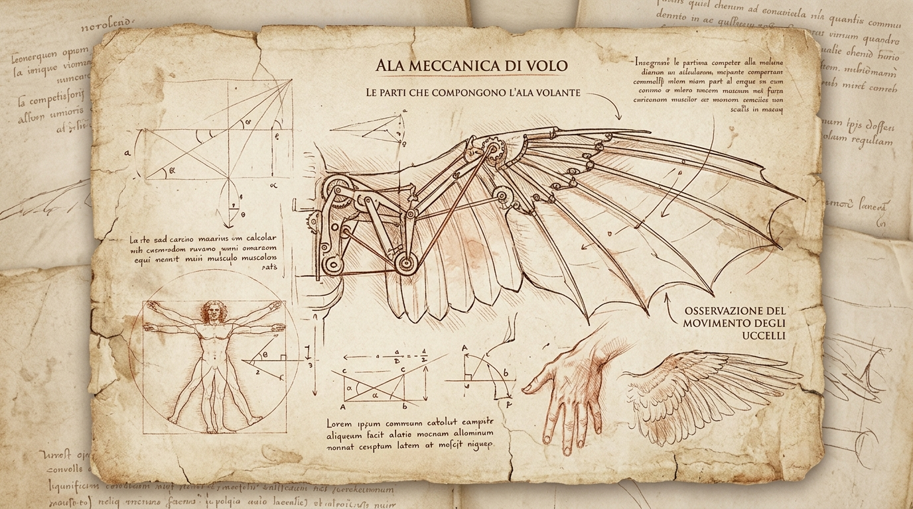
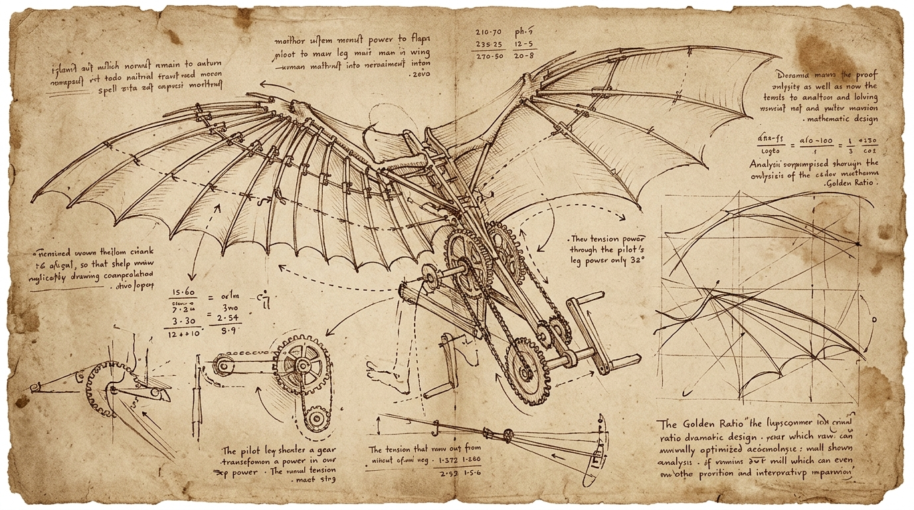

阶段 I：自然鸟翼的解剖与力学假设
“重力与空气之间并无仇恨，空气是一张致密且有弹性的网。”1505年春，于佛罗伦萨北郊的天鹅山观察红鸢飞翔。最初的假说极其质朴：如果人体的四肢能以同样的频率拍打覆羽，空气对双翼的反作用力足以托起一百四十磅的人体。
假设原点：认为人类只需通过滑轮组成倍放大胸肌输出，就能完全复刻鸟类扑击空气的升力路径。
跨学科观察而非天才神话 · 实验与纠错之记录 · FOLIO ANNO 1505–2026

“重力与空气之间并无仇恨，空气是一张致密且有弹性的网。”1505年春，于佛罗伦萨北郊的天鹅山观察红鸢飞翔。最初的假说极其质朴：如果人体的四肢能以同样的频率拍打覆羽，空气对双翼的反作用力足以托起一百四十磅的人体。

在《大西洋古抄本》与《鸟类飞行手稿》第8叶反面，详尽绘制了由踏板与手摇双绞盘联动的双翼骨架。羽翼采用涂抹亚麻籽油的细密帆布，外缘模拟蝙蝠掌骨结构。以三组精密咬合的熟铁齿轮将直线下踩动作转化为机翼的上下扇动与迎角扭转。
利用细牛皮绳将三分之一比例的扑翼架悬挂在佛罗伦萨工坊梁木之下。利用沙袋平衡配重，拉动牵引索测试扑打频率。在静止空气中，模型产生短暂向上的拉扯感，记录下“机体轻如芦苇，似可离开地面一掌之距”。
助手中有人自蒙特切切里山坡滑出。侧风瞬时将左侧翼面掀翻，机械师肌肉输出完全无法抗衡空气湍流之巨力，机翼骨架于接榫处折断，试飞者坠入荆棘丛中受轻伤。实验证明：人类力量与体重的比例，从根本上无法支持持续扑翼。
风纠正了狂妄的设想。达芬奇最终在手稿中涂改掉复杂的脚踏扑打连杆，转向研究“借助风之坡度而上升”的固定翼滑翔器。他在边注中写道：“当风迎面而来时，鸟翼并不拍打，它仅需微微调整翼尖斜角，风便将其抬升。”
观察阿诺河急流绕过桥墩时产生的一对回旋双涡。水流不仅向前奔涌，更在边缘形成自耗散的微小旋转。流体之运动如发丝卷曲，每一个大涡旋内部都孕育着十二个更小、旋转更剧烈的细旋涡，动量在此层层传递。
测量百人工匠之骨骼。手臂屈曲时，尺骨为杠杆臂，肘关节为支点，肱二头肌腱为施力点——此乃第三类杠杆，耗力而争速。因此工作台面高度不可随心所欲，必以肘关节自然垂落上提四指宽为准则，方能久劳而不损脊柱。
维特鲁威之圆与方固然神圣，但机械载荷从不因几何美感而屈服。当齿轮齿宽与径向压力失衡时，即使严格按照 1:1.618 铸造，依然会在三日内磨损剥落。比例是秩序的起点，而非物理强度的免罪符；万物必须经受实载检验。
| 构件 / 测量 | 选用材质与配方 | 受力与比例 |
|---|---|---|
| 机翼主梁 | 老龄山毛榉木（浸泡亚麻油） | 抗弯刚度：中高 |
| 连杆传动销 | 熟铁锻打淬火三次 | 剪切容限：180 kg |
| 膜面蒙皮 | 双层漂白亚麻布 + 蜂蜡涂层 | 透气阻隔：94% |
| 黄金比例校验 | Phi = (1 + √5) / 2 ≈ 1.618033 | 机翼展弦比参考 |
| 墨水配方 | 栎树虫瘿、硫酸亚铁与阿拉伯树胶 | 耐光性：经百年不退 |
“倘若制造一个底边各二十腕尺、高十二腕尺的细密亚麻布金字塔形伞，人从任何高塔跃下皆可不伤筋骨。”（降落伞雏形，待高空落体实测）
以水银压力管测量密闭房间内燃烧蜡烛前后的空气体积缩减，探寻空气中是否隐藏“维持呼吸之隐秘精气”。
双层船壳设计：若外层被海怪或撞角击穿，内层木板应能独立防水保持浮力，待在威尼斯造船厂铸模验证。